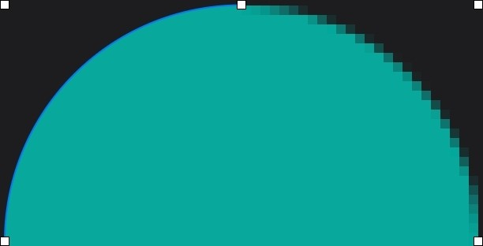
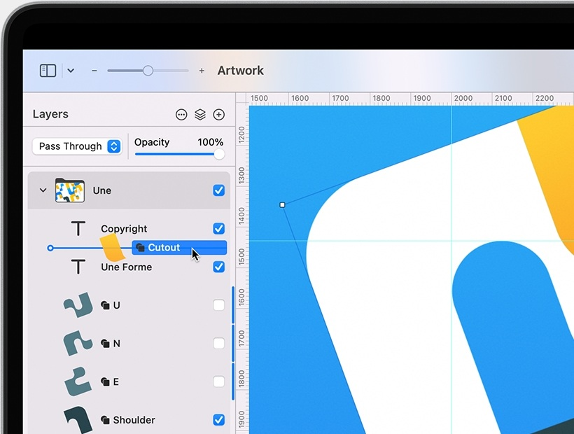
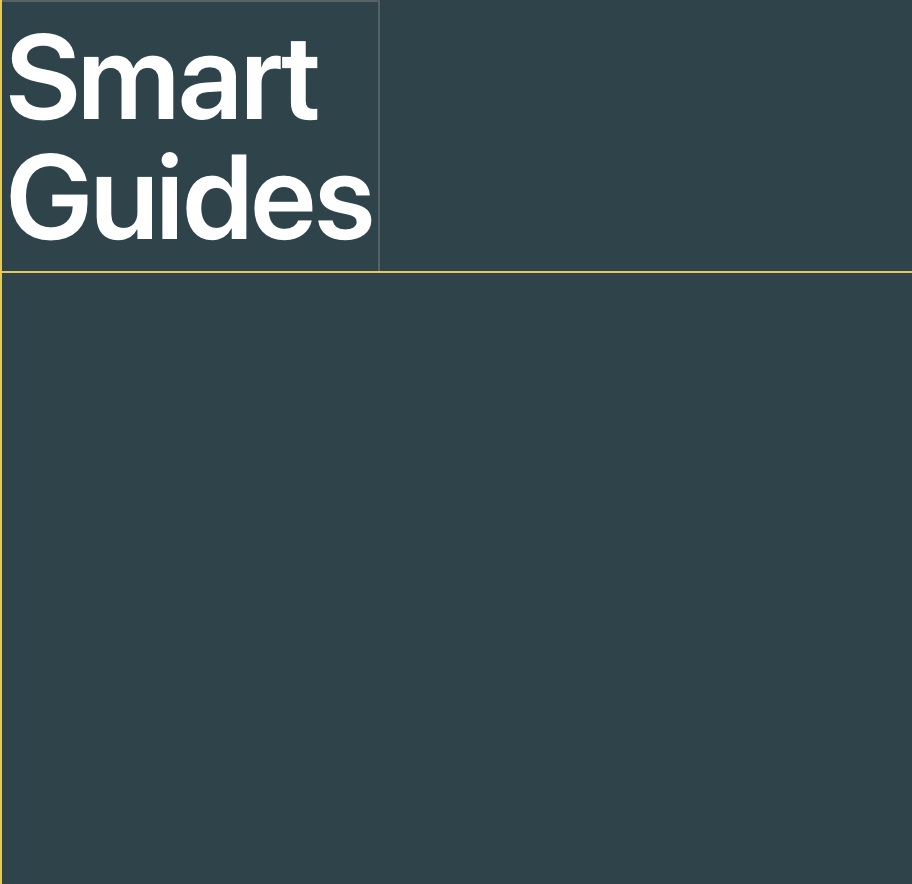

Draw and illustrate with a full collection of vector tools.
Pixelmator Pro comes with a full set of vector tools for creating resolution-independent designs.It includes easily customizable vector shapes, a large collection of pre-designed shapes, and support for vector file formats including PSD, SVG, PDF,Adobe Illustrator EPS.

Resolution Independent
Vector shapes are resolution-independent, so curves always look smooth and edges always stay sharp, no matter how much you resize each shape or even entire vector designs.
Vector Support
Pixelmator Pro supports vector file formats, including PSD, SVG, PDF, Adobe Illustrator, and Illustrator EPS, so you can effortlessly edit shapes and paths in these files, and export them while keeping all their vector data.

Smart Shapes
With a collection of pre-made Smart Shapes, you can quickly add star and various polygon shapes, arrows, speech bubbles, and other shapes to your composition, then customize them in any way you want.
Powerful tools for perfecting your photos.
This collection of powerful, nondestructive color adjustments in Pixelmator Pro lets you edit and enhance photos in any way you want. Every tool is designed to help you make your photos look their best — and with real-time editing, it's easier than ever to turn good-looking graphics spectacular.
Edit the colors in your photos in any way you want.
In Pixelmator Pro, you'll find everything from essential color adjustments like brightness, contrast, and exposure to advanced tools like multi-channel curves and wheel-based color balance.
Enhance photos automatically.
Many of the most important adjustaments can be applied automatically, using a machine learning algorithm trained on 20 million photos.
Perfect every detail.
Magically remove unwanted objects, clone parts of your photos, lighten or darken precise areas, and do much more.All by using simple brushstrokes to retouch just the areas you want.So all your shots look picture-perfect.
Effortless RAW editing.
Pixelmator Pro supports RAW photos from over 750 cameras. What's more,you can add RAW photos as RAW layers and edit directly without having convert or preprocess them.

Make advanced color edits using color adjustments layers.
Use color adjustments layers to combine different color adjustments, selectively edit photos with incredible precision, and change the look entire layered compositions with ease.
Everything you need to create beautiful designs.
Whether you're working on a design for a poster, a webpage, or a blockbuster app, you'll make your ideas come to life in Pixelmator Pro. With smart spacing guides, advanced alignment tools, and blazing fast performance, you can harness the full power of layer-based editing.
Layer-Based Editing
Use simple buildings blocks - shape, text, video, and image layers - to create stunning compositors and designs.Add layers in delightfully quick and simple ways, such as by dragging and dropping them straight into Pixelmator Pro, or using built-in Photo Browser.
Smart Guides
The Arrange tool makes it incredibly easy to create designs.It lets you automatically select layers by clicking them on the canvas, intelligently snaps layers into position as you move them around, and even lets you align and distribute layers automatically
Layer Styles
Nondestructively customize the look of any layer in your image by adding fills, strokes, and shadows, or any combination of multiple styles.And with presets, you can save your favorite combinations, use them in any of your images, and even share them with others.
Image editing powered by machine learning.
To deliver more intelligent image editing, Pixelmator Pro uses machine learning - a technology that allows computers to gain knowledge to perform specific tasks more like a person than a computer.Wich enabled us to create features that have never before been possible.
ML Enhance
Automatically enhance photos like a pro photographer.
Super Resolution
Magically Increase the resolution of images while preserving sharpness And details.
Match Colora
Quick and easily match the colors and style of any photo.
Denoise
Effortessly remove camera noise and image compression artifacts from photos.
Quick Selection Tool
Quick make accurate selections ease.
Crop
Improve the composition of photos with just a click.
Remove Background
Remove the background formats any image with just a click.
Select Subject
Automatically select the subjects of images with ease.
Select and Mask Tool
Easily make advanced selections of challenging image areas like hair or fur.
Magically get rid of unwanted objects.
Make small imperfections or even entire objects disappear from your images by paiting over them with the Repair Tool.No matter how complex the background, the Repair Tool can make almost any object vanish without a trace.